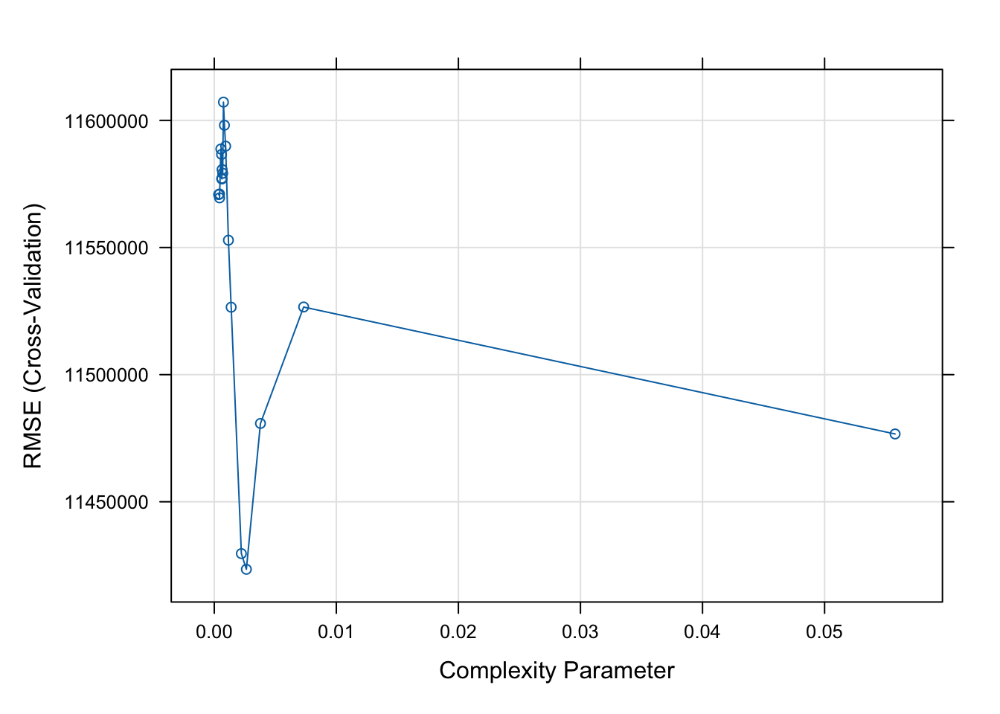
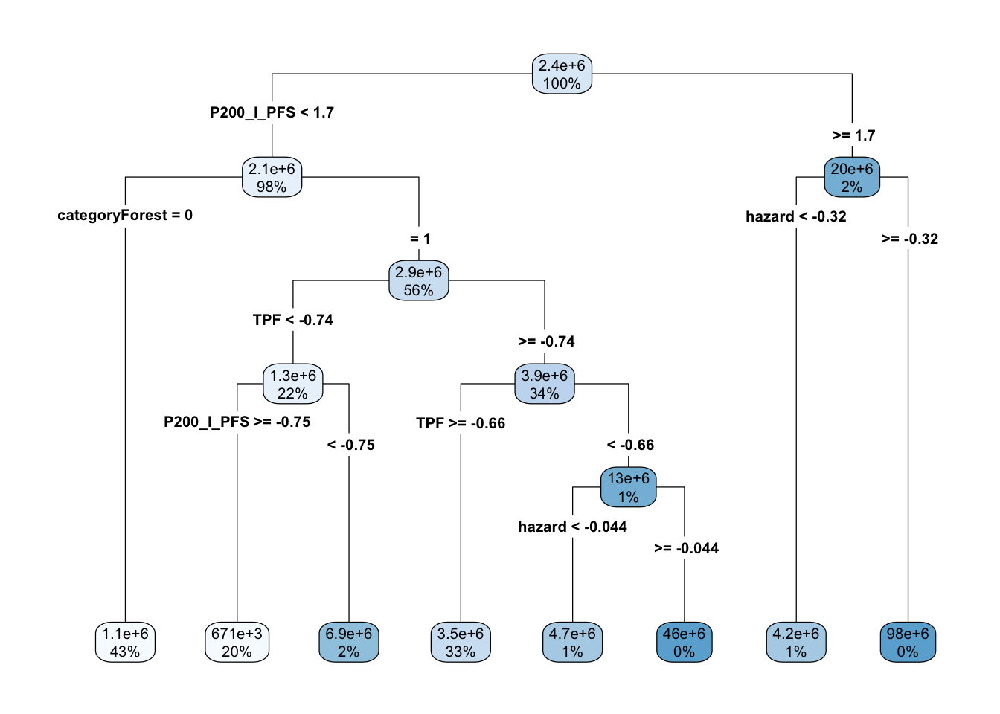

Assignment 9 Solutions: Fitting models to your dataframe
1. Use the variables that you chose from assignment 6 along with the wildfire hazard and land use dataset to attribute each disaster in the disaster dataset.
Here I am following the same procedure from assignment 7 for creating the spatial database. The only real change is that we are attributing point data (in the incidents dataset) instead of summarizing to polygons (like we did with the Forest Service data). We drop any incomplete cases to avoid problems with NAs (though this may not be the best thing to do in practice) and store that data for later. We then set up our model dataframe by making sure that the cost variable is an integer (for Poisson modeling) and that we drop levels from the land use dataset that don’t appear in our incident locations.
library(sf)
Linking to GEOS 3.11.0, GDAL 3.5.3, PROJ 9.1.0; sf_use_s2() is TRUE
── Conflicts ────────────────────────────────────────── tidyverse_conflicts() ──
✖ dplyr::filter() masks stats::filter()
✖ dplyr::lag() masks stats::lag()
ℹ Use the conflicted package (<http://conflicted.r-lib.org/>) to force all conflicts to become errors
library(terra)
terra 1.7.39
Attaching package: 'terra'
The following object is masked from 'package:tidyr':
extract
library(tmap, quietly =TRUE)
The legacy packages maptools, rgdal, and rgeos, underpinning the sp package,
which was just loaded, will retire in October 2023.
Please refer to R-spatial evolution reports for details, especially
https://r-spatial.org/r/2023/05/15/evolution4.html.
It may be desirable to make the sf package available;
package maintainers should consider adding sf to Suggests:.
The sp package is now running under evolution status 2
(status 2 uses the sf package in place of rgdal)
Breaking News: tmap 3.x is retiring. Please test v4, e.g. with
remotes::install_github('r-tmap/tmap')
library(caret)
Loading required package: lattice
Attaching package: 'caret'
The following object is masked from 'package:purrr':
lift
2. Fit a Poisson regression using your covariates and the cost of the incident data (using glm with family=poisson())
Now that we have our data, it’s time to set up some models. We take advantage of the caret package to split the data into a training and testing set using the category variable to make sure we have representation of all the cateogries. We then set up our trainControl options to use cross validation as a means of adjusting tuning parameters and tell R to only save the best model once the tuning is complete. Finally, we use the train function from caret to fit our first model. For a simple Poisson regression, we can rely on the glm method with the family set to poisson. Note that because this is not binary data, our ROC metric doesn’t work as a means of evaluating the performance of the different tuning parameters. Instead, we use something called the Root-Mean Squared Error (RMSE).The RMSE is a measure of the difference between the fitted value and the observed value (in this case, for the cross-validation data within the model training). Larger values indicate poorer fits.
set.seed(998)inTraining <-createDataPartition(incident.cejst.model$category, p = .8, list =FALSE)training <- incident.cejst.model[ inTraining,]testing <- incident.cejst.model[-inTraining,]fitControl <-trainControl(method ="cv", # k-fold cross validationnumber =10, # 10 foldssavePredictions ="final"# save predictions for the optimal tuning parameter)PoisFit <-train( cost ~ ., data = training, method ="glm", family = poisson,trControl = fitControl,metric="RMSE" )
3. Fit a regression tree using your covariates and the cost of the incident data (using caret package method=rpart`)
We use similar syntax to fit the regression tree to the data, but make a few changes. First, we set cost as.numeric() to ensure that this is a regression tree (because our data do not reflect categories). We then set the method to rpart. Because rpart has a complexity parameter, there is a bit of tuning to be done. We tell R that we’re willing to look at 20 different values of this complexity parameter. We can use plot and rpart.plot to inspect the results.
Warning in nominalTrainWorkflow(x = x, y = y, wts = weights, info = trainInfo,
: There were missing values in resampled performance measures.
plot(RtFit)

rpart.plot::rpart.plot(RtFit$finalModel, type=4)

4. Fit a random forest model using your covariates and the cost of the incident data (using caret package method= 'rf')
The syntax is similar to the previous models, but with method=rf to signal that we want to use the rf package to fit the Random Forest. Here, the tuning parameter is the number of variables to include in the tree. We’ve only got 7 variables so we’ll set the tuneLength to the maximum number of variables.
5. Use cross-validation to identify the best performing model of the 3 that you fit
Now that we have three different models, let’s see how well they do predicting the testing dataset. We first generate predictions using the predict function and supplying the model object and the newdata. In this case, our new data is the five covariate columns from the testing partition. Once we have the predictions, we can calculate the RMSE. Based on RMSE values the regression tree and Random Forest model seem to be the better performers.
6. Convert all of your predictors into rasters of the same resolution and generate a spatial prediction based on your model
Now that we’ve identified the models we want to use to generate our spatial surface, we need to prepare all of the input rasters. We use rasterize to create the cejst variables. These are on original scale of the data and so we need to rescale them to the same range of our modeled datasets. Here, we can’t use scale because the mean of the total dataset would differ from the mean that we used for the incidents-only data so we have to manually set up the scale. Lastly, we have to drop the levels from the land use raster that weren’t present in the incident dataset. We do that with the subst call from terra. Once we’ve got our rasters set up, we can just use predict.
If you looked at the RMSE values for our initial models, you’ll notice that they were quite high and the models weren’t particularly interesting. Because the cost data ranges over several orders of magnitude, we might try log-transforming them and fitting a linear model (because the data are no longer integers) along with the other two models. We do that here following the syntax above. When calculating the RMSE, we have to remember to log-transform the cost variable in the testing dataset to make sure that the predictions are comperable. Again, the regression tree and Random Forest are the better performers, but the RMSE suggests that we are doing considerably better (\(10^{2}=100\) as opposed to the 100,000s we were getting before).